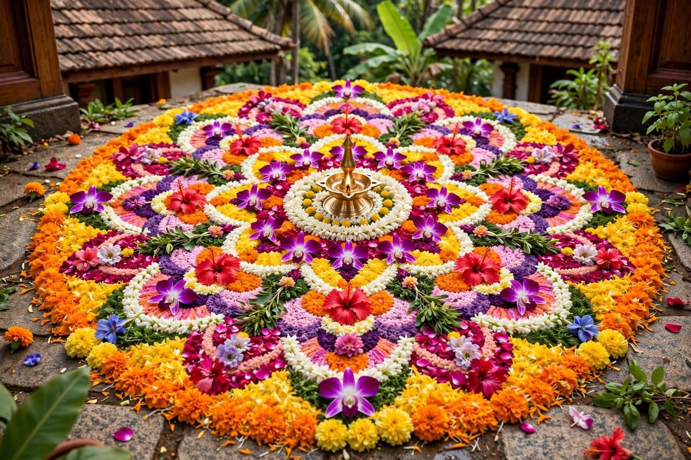

Seasonal Festivals

Seasonal festivals are celebrations connected with different seasons, changes in nature and traditional activities of people. These festivals are celebrated at different times of the year according to local customs and seasonal changes. They bring families and communities together through traditional food, music, dance, prayers and cultural activities. Seasonal festivals also show the close connection between Indian traditions, nature and everyday life.